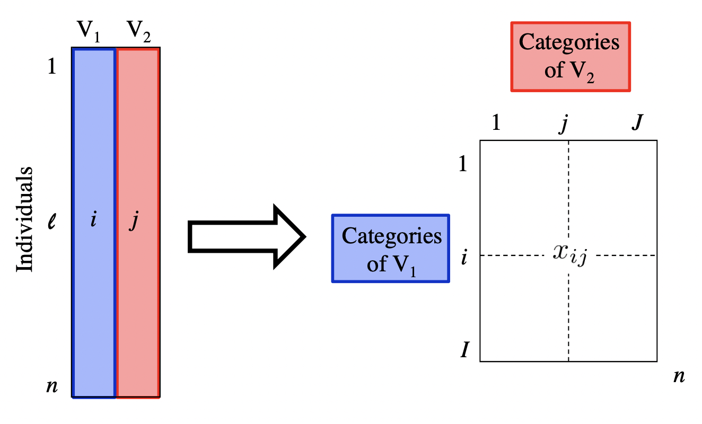
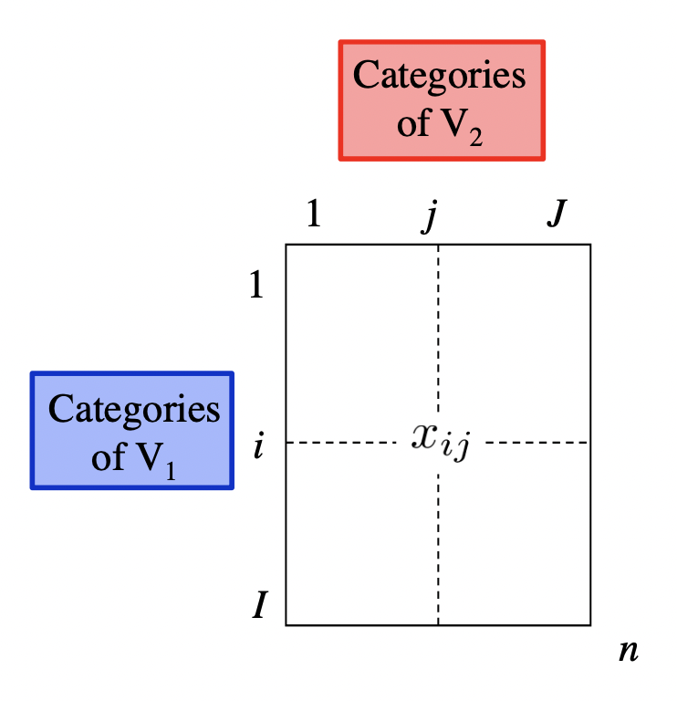
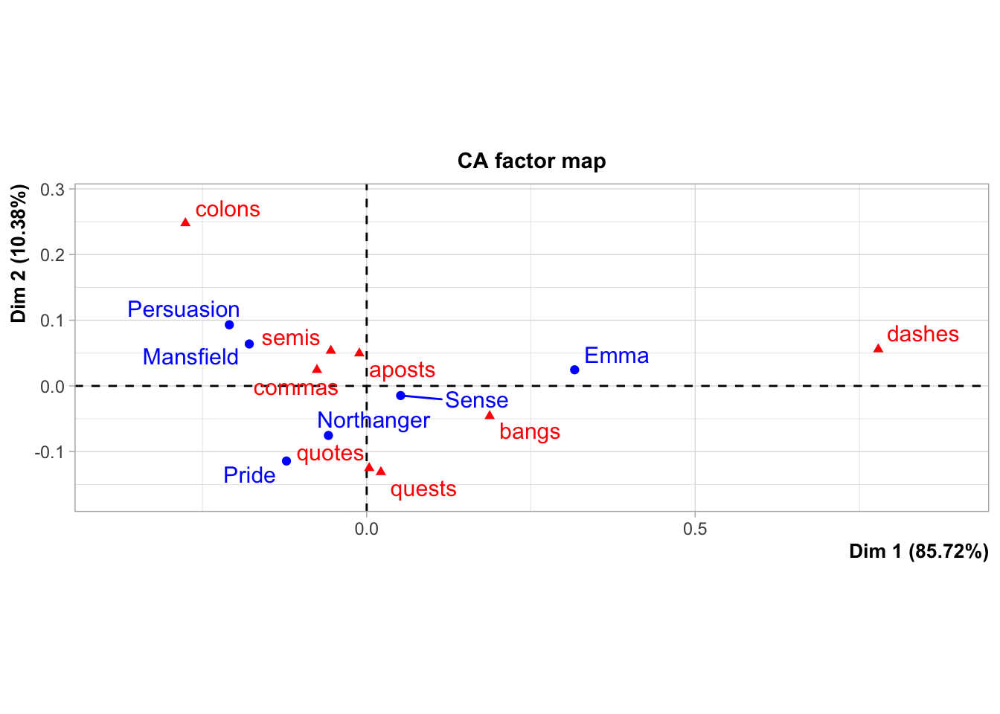
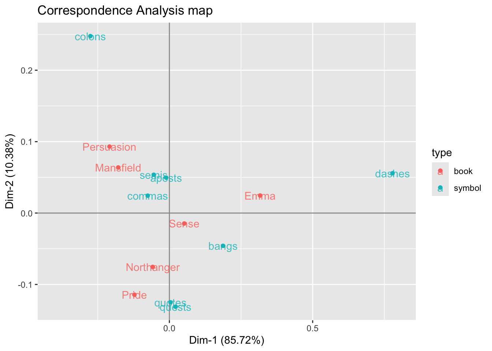

# used packages
library(tidyverse) # base tidy data tools
library(tidytext) # text mining; gets along with tidyverse
library(janeaustenr) # Jane Austen's novels
library(FactoMineR) # Multivariate Statistics methodsCorrespondence Analysis 2
UC Berkeley, STAT 133, Fall 2024
This is a companion file to the Stat 133 lectures on “Text Mining”. You’ll need the following packages:
1 Jane Austen’s Novels
As you know, the package "janeaustenr" contains the six novels by Jane Austen:
- Emma
- Mansfield Park
- Northanger Abbey
- Persuasion
- Pride and Prejudice
- Sense and Sensibility
The text of each novel is available in vector format: e.g. prideprejudice, emma, persuasion. But you can also find the text of all six novels in a single data frame (tibble) by using the function austen_books()
austen_books()2 Detecting Associations with Correspondence Analysis (CA)
Say we are interested in studying the use of punctuation symbols across all Austen’s novels:
- commas:
"," - semicolons:
";" - colons:
":" - quotations:
'\\"' - apostrophes:
"'" - question marks:
"?" - exclamation symbols:
"!" - dashes (pairs):
"--"
We can use str_count() to count the frequencies of these types of symbols, and then get the their total sum for each book:
crosstable = austen_books() |>
mutate(
commas = str_count(text, ","),
colons = str_count(text, ":"),
semicolons = str_count(text, ";"),
quotes = str_count(text, '\\"'),
apostrophes = str_count(text, "'"),
questions = str_count(text, "\\?"),
exclamations = str_count(text, "\\!"),
dashes = str_count(text, "--")
) |>
group_by(book) |>
summarise(
commas = sum(commas),
colons = sum(colons),
semis = sum(semicolons),
quotes = sum(quotes),
aposts = sum(apostrophes),
quests = sum(questions),
bangs = sum(exclamations),
dashes = sum(dashes)
)
crosstable# A tibble: 6 × 9
book commas colons semis quotes aposts quests bangs dashes
<fct> <int> <int> <int> <int> <int> <int> <int> <int>
1 Sense & Sensibility 9900 66 1572 3084 914 451 561 1178
2 Pride & Prejudice 9132 132 1538 3531 741 462 499 395
3 Mansfield Park 12439 339 2260 3292 1135 471 496 413
4 Emma 12020 174 2353 4189 1226 621 1063 3100
5 Northanger Abbey 6085 83 1172 2151 545 392 433 419
6 Persuasion 7025 130 1320 1565 582 217 318 142The above table, technically speaking, is an example of a cross-table, also referred to as a 2-way table or a contingency table. The important thing about this table is that it contains counts, which in turn are non-negative numbers.
From a statistical point of view, this table is the result of crossing the categories of 2 qualitative (i.e. categorical) variables:
Variable \(V_1\): name of book or novel
Variable \(V_2\): type of punctuation symbol

With this kind of table, we could ask questions like:
Is there an association between books and punctuation symbols?
Do some books tend to have more (or less) of a certain punctuation symbol?
To answer this kind of questions, we can use a statistical multivariate method known as Correspondence Analysis (CA).
Originally, CA was developed to analyze contingency tables in which a sample of observations is described by two nominal variables, but it was rapidly extended to the analysis of any data table with non-negative entries.
On a side note, we should mention that CA was often discovered (and rediscovered), and so variations of CA can be found under several different names such as “dual scaling,” “optimal scaling,” “homogeneity analysis,” or “reciprocal averaging.” The multiple identities of correspondence analysis are a consequence of its large number of properties, that answer a lot of apparently different problems.
3 Correspondence Analysis Map
In order to explain Correspondence Analysis, and also to simplify some of the computations on the data in crosstable, it’s better if we reformat this object as a matrix:
# cross-table in matrix format
# (matrix of counts or frequencies)
X = as.matrix(crosstable[,-1])
rownames(X) = str_extract(crosstable$book, "\\w+")
X commas colons semis quotes aposts quests bangs dashes
Sense 9900 66 1572 3084 914 451 561 1178
Pride 9132 132 1538 3531 741 462 499 395
Mansfield 12439 339 2260 3292 1135 471 496 413
Emma 12020 174 2353 4189 1226 621 1063 3100
Northanger 6085 83 1172 2151 545 392 433 419
Persuasion 7025 130 1320 1565 582 217 318 142
The previous row-analysis and column-analysis let us get an idea of how categories in variable \(V_1\) seem to be associated with categories in variable \(V_2\). While these two analyses provide useful information, we have to carry out them separately. Interestingly, we can use correspondence analysis to perform a similar exploration in a simultaneous way, without having to derive all the different kinds of probabilities and their associated tables.
To perform a correspondence analysis we are going to use the CA() function from the package "FactoMineR". This function takes a data table or a matrix with non-negative numbers, such our initial matrix X.
3.1 Simultaneous Representation of Rows and Columns
From an exploratory data analysis standpoint, we can use Correspondence Analysis to obtain a “map” (or scatterplot) to visually represent the categories behind the crosstable of frequencies, like in the following graphic:
austen_ca1 = CA(X)
By default, CA() produces its own plot (see figure above). You can turn off this behavior with the argument graph = FALSE
# no default plot
austen_ca1 = CA(X, graph = FALSE)If we want to use ggplot(), we need to do a bit of data manipulation:
# table with row and column coordinates (i.e. factor scores)
ca_dat = data.frame(
rbind(austen_ca1$row$coord[ ,1:2],
austen_ca1$col$coord[ ,1:2]))
# type of book or symbol
ca_dat$type = c(rep("book", nrow(austen_ca1$row$coord)),
rep("symbol", nrow(austen_ca1$col$coord)))
# correspondence analysis scatterplot
ggplot(ca_dat, aes(x = Dim.1, y = Dim.2, color = type)) +
geom_hline(yintercept = 0, col = "gray60") +
geom_vline(xintercept = 0, col = "gray60") +
geom_point() +
geom_text(label = rownames(ca_dat), alpha = 0.8) +
scale_x_continuous(limits = c(-0.4, 0.8)) +
labs(title = "Correspondence Analysis map",
x = sprintf("Dim-1 (%0.2f%s)", austen_ca1$eig[1,2], "%"),
y = sprintf("Dim-2 (%0.2f%s)", austen_ca1$eig[2,2], "%"))
What does CA do?: Without going down the technical rabbit hole behind CA, it can be said that CA transforms a data table into two sets of new variables called factor scores: one set for the rows, and one set for the columns. These factor scores give the best representation of the similarity structure of, respectively, the rows and the columns of the table.
In the above map, rows and columns are represented as points whose coordinates are the factor scores and where the dimensions are also called factors, or simply dimensions. Interestingly, the factor scores of the rows and the columns have the same variance and, therefore, the rows and columns can be conveniently represented in one single map.
How to Interpret Point Proximity: Because of the way in which the coordinates are obtained to produce the above CA map, we get a nice interpretation of the displayed data. When two row points (or two column points, respectively) are close to each other, this means that these points have similar profiles, and therefore they will be located exactly at the same place.
What about the proximity between row and column points? It turns out that we can comment on the position of a row with respect to the positions of all of the columns but keeping in mind that it is impossible to draw conclusions about the distance between a specific row and a specific column.
The first dimension opposes the categories dashes and colons. This opposition on the graph is associated to the book Emma which has the largest proportion of dashes compared to the rest of the books. The table below shows the relative frequencies between a given book and a given symbol. Notice the cell of Emma and dashes, which has the largest proportion. In contrast, colons are more present in Mansfield than in any other book.
The book category Sense is extremely close to the origin of the graphic, thus indicating a profile near to the average book profile. Likewise the symbol category commas is the closest to the origin, signaling that this symbol is also close to the use of the average symbol profile.
4 Another example of CA
Let’s consider another example performing a sentiment analysis and visualizing the results with a correspondence analysis map.
We’ll keep using all the books by Jane Austen. As usual, we begin by tokenizing the texts, then we remove stop-words, and after that we merge—via inner_join()—sentiments from Bing’s lexicon:
word_sentims = austen_books() |>
unnest_tokens(output = word, input = text) |>
anti_join(stop_words, by = "word") |>
inner_join(sentiments,
by = "word",
relationship = "many-to-many") |>
count(book, word, name = "count", sort = TRUE)
head(word_sentims, 10)# A tibble: 10 × 3
book word count
<fct> <chr> <int>
1 Emma miss 599
2 Mansfield Park miss 432
3 Pride & Prejudice miss 283
4 Sense & Sensibility miss 210
5 Northanger Abbey miss 206
6 Emma poor 136
7 Emma happy 125
8 Persuasion miss 125
9 Mansfield Park love 124
10 Mansfield Park happy 117Notice that the most frequent word is miss which we know is more likely to refer to a lady or woman instead of the verb “to miss”. Therefore, we are going to remove it from word_sentims
word_sentims = word_sentims |>
filter(word != "miss")
head(word_sentims, 10)# A tibble: 10 × 3
book word count
<fct> <chr> <int>
1 Emma poor 136
2 Emma happy 125
3 Mansfield Park love 124
4 Mansfield Park happy 117
5 Emma love 117
6 Emma pleasure 115
7 Mansfield Park pleasure 101
8 Sense & Sensibility happy 100
9 Emma doubt 98
10 Mansfield Park poor 96The next step involves identifying, in a somewhat arbitrary way, words that have a “large” count, for example a count greater than or equal to 68:
selected_words = word_sentims |>
filter(count >= 68) |>
distinct(word) |>
pull()
selected_words[1] "poor" "happy" "love" "pleasure" "doubt" "happiness"
[7] "comfort" "affection" "pretty" With these selected_words, we filter them in from word_sentims to get a subset word_sentims2:
word_sentims2 = word_sentims |>
filter(word %in% selected_words)
head(word_sentims2, 10)# A tibble: 10 × 3
book word count
<fct> <chr> <int>
1 Emma poor 136
2 Emma happy 125
3 Mansfield Park love 124
4 Mansfield Park happy 117
5 Emma love 117
6 Emma pleasure 115
7 Mansfield Park pleasure 101
8 Sense & Sensibility happy 100
9 Emma doubt 98
10 Mansfield Park poor 96Having obtained the table word_sentims2, we then proceed to obtain the cross-table between books and the selected words
crosstable2 = word_sentims2 |>
select(book, word, count) |>
pivot_wider(
names_from = word,
values_from = count)
crosstable2# A tibble: 6 × 10
book poor happy love pleasure doubt happiness comfort affection pretty
<fct> <int> <int> <int> <int> <int> <int> <int> <int> <int>
1 Emma 136 125 117 115 98 76 65 50 68
2 Mansfield… 96 117 124 101 46 86 83 52 56
3 Sense & S… 71 100 77 67 46 66 63 79 36
4 Pride & P… 38 83 92 92 37 72 31 58 24
5 Persuasion 55 64 42 39 26 32 21 9 28
6 Northange… 28 45 43 48 28 37 29 24 30To apply correspondence analysis, we convert crosstable into a matrix Y. In case we had entries with missing values, we play safe and artificially replace NA with 0.
Y = as.matrix(crosstable2[,-1])
Y[is.na(Y)] = 0
rownames(Y) = str_extract(crosstable2$book, "\\w+")
Y poor happy love pleasure doubt happiness comfort affection pretty
Emma 136 125 117 115 98 76 65 50 68
Mansfield 96 117 124 101 46 86 83 52 56
Sense 71 100 77 67 46 66 63 79 36
Pride 38 83 92 92 37 72 31 58 24
Persuasion 55 64 42 39 26 32 21 9 28
Northanger 28 45 43 48 28 37 29 24 30The last step involves passing Y to CA() to obtain the necessary outputs and produce the correspondence analysis map with ggplot() and friends:
# Correspondence Analysis
austen_ca2 = CA(Y, graph = FALSE)
# table with row and column coordinates (i.e. factor scores)
ca_dat = data.frame(
rbind(austen_ca2$row$coord[ ,1:2],
austen_ca2$col$coord[ ,1:2]))
# type of book or word
ca_dat$type = c(rep("book", nrow(austen_ca2$row$coord)),
rep("word", nrow(austen_ca2$col$coord)))
# correspondence analysis scatterplot
ggplot(ca_dat, aes(x = Dim.1, y = Dim.2, color = type)) +
geom_hline(yintercept = 0, col = "gray60") +
geom_vline(xintercept = 0, col = "gray60") +
geom_point() +
geom_text(label = rownames(ca_dat), alpha = 0.8) +
scale_x_continuous(limits = c(-0.3, 0.4)) +
labs(title = "Correspondence Analysis map",
x = sprintf("Dim-1 (%0.2f%s)", austen_ca2$eig[1,2], "%"),
y = sprintf("Dim-2 (%0.2f%s)", austen_ca2$eig[2,2], "%"))4.1 Words with Positive Sentiments
Out of curiosity, we can perform a similar analysis but this time using only positive words (the same could be done with only negative words).
positive_words = austen_books() |>
unnest_tokens(output = word, input = text) |>
anti_join(stop_words, by = "word") |>
count(book, word, name = "count") |>
inner_join(sentiments,
by = "word",
relationship = "many-to-many") |>
filter(sentiment == "positive") |>
arrange(desc(count))
head(positive_words, 10)# A tibble: 10 × 4
book word count sentiment
<fct> <chr> <int> <chr>
1 Emma happy 125 positive
2 Mansfield Park love 124 positive
3 Mansfield Park happy 117 positive
4 Emma love 117 positive
5 Emma pleasure 115 positive
6 Mansfield Park pleasure 101 positive
7 Sense & Sensibility happy 100 positive
8 Pride & Prejudice love 92 positive
9 Pride & Prejudice pleasure 92 positive
10 Mansfield Park happiness 86 positive Like in preceding example, here the idea is to identify common positive words. For instance, we can identify words that have a count greater than 50 (you can choose another threshold):
selected_positive = positive_words |>
filter(count >= 50) |>
distinct(word) |>
pull()
selected_positive [1] "happy" "love" "pleasure" "happiness" "comfort" "affection"
[7] "pretty" "glad" "perfectly" "ready" "kindness" "assure"
[13] "superior" "fine" "agreeable" "satisfied" "regard" With these subset of positive words, we filter them in from positive_words and then obtain the cross-table between book categories and positive words:
crosstable3 = positive_words |>
filter(word %in% selected_positive) |>
select(book, word, count) |>
pivot_wider(
names_from = word,
values_from = count)
crosstable3# A tibble: 6 × 18
book happy love pleasure happiness comfort affection pretty glad perfectly
<fct> <int> <int> <int> <int> <int> <int> <int> <int> <int>
1 Emma 125 117 115 76 65 50 68 50 67
2 Mansf… 117 124 101 86 83 52 56 67 48
3 Sense… 100 77 67 66 63 79 36 44 43
4 Pride… 83 92 92 72 31 58 24 37 47
5 Persu… 64 42 39 32 21 9 28 33 43
6 North… 45 43 48 37 29 24 30 32 23
# ℹ 8 more variables: ready <int>, kindness <int>, assure <int>,
# superior <int>, fine <int>, agreeable <int>, satisfied <int>, regard <int>To pass the cross-table to CA(), we convert crosstable3 into a matrix Xpos:
Xpos = as.matrix(crosstable3[,-1])
Xpos[is.na(Xpos)] = 0
rownames(Xpos) = str_extract(crosstable3$book, "\\w+")
Xpos happy love pleasure happiness comfort affection pretty glad
Emma 125 117 115 76 65 50 68 50
Mansfield 117 124 101 86 83 52 56 67
Sense 100 77 67 66 63 79 36 44
Pride 83 92 92 72 31 58 24 37
Persuasion 64 42 39 32 21 9 28 33
Northanger 45 43 48 37 29 24 30 32
perfectly ready kindness assure superior fine agreeable satisfied
Emma 67 66 40 59 59 42 50 52
Mansfield 48 60 60 19 11 57 52 44
Sense 43 35 42 32 12 25 25 26
Pride 47 20 29 39 18 31 45 34
Persuasion 43 22 15 25 9 33 38 23
Northanger 23 23 14 18 5 28 32 17
regard
Emma 43
Mansfield 37
Sense 50
Pride 49
Persuasion 25
Northanger 10And finally we apply CA() to Xpos to get the CA map:
ca_pos = CA(Xpos, graph = FALSE)
# table with row and column coordinates (i.e. factor scores)
ca_dat = data.frame(
rbind(ca_pos$row$coord[ ,1:2],
ca_pos$col$coord[ ,1:2]))
# type of book or word
ca_dat$type = c(rep("book", nrow(ca_pos$row$coord)),
rep("word", nrow(ca_pos$col$coord)))
# correspondence analysis scatterplot
ggplot(ca_dat, aes(x = Dim.1, y = Dim.2, color = type)) +
geom_hline(yintercept = 0, col = "gray60") +
geom_vline(xintercept = 0, col = "gray60") +
geom_point() +
geom_text(label = rownames(ca_dat), alpha = 0.8) +
scale_x_continuous(limits = c(-0.4, 0.5)) +
labs(title = "Correspondence Analysis map",
subtitle = "Words with positive sentiments",
x = sprintf("Dim-1 (%0.2f%s)", ca_pos$eig[1,2], "%"),
y = sprintf("Dim-2 (%0.2f%s)", ca_pos$eig[2,2], "%"))